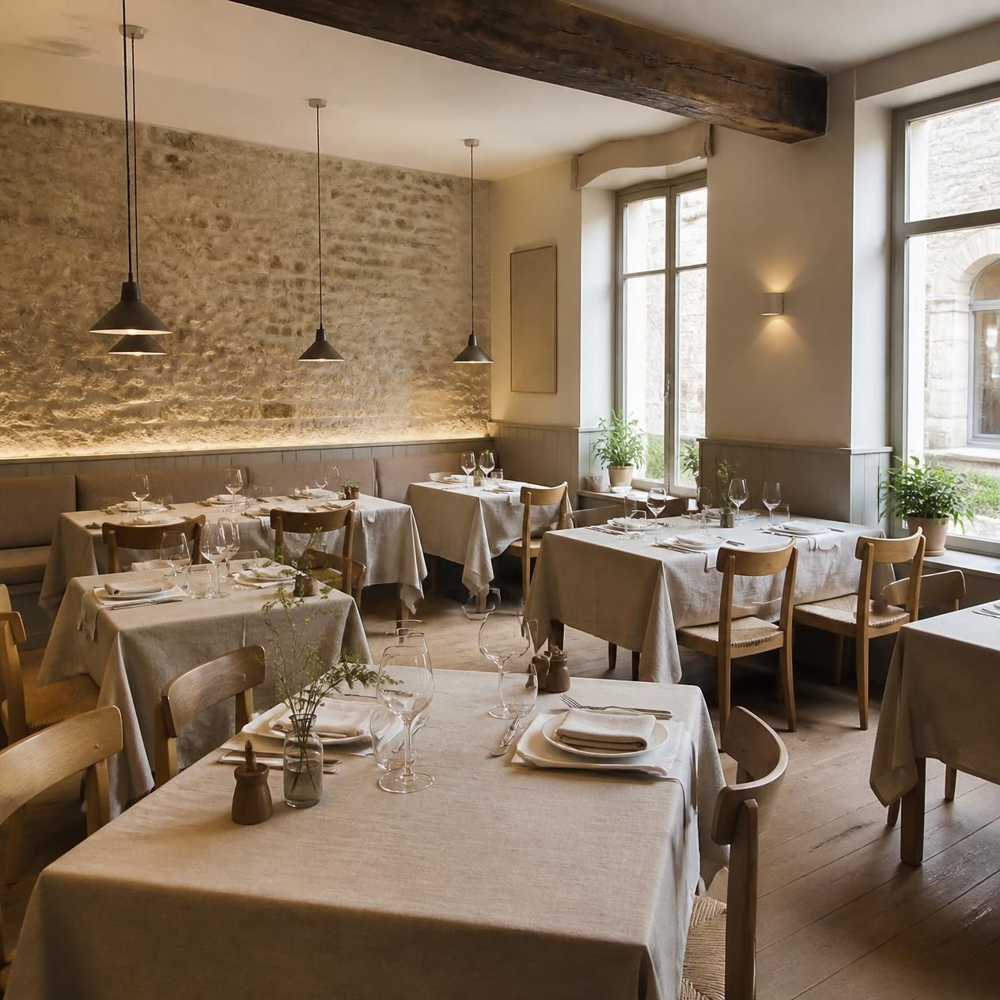
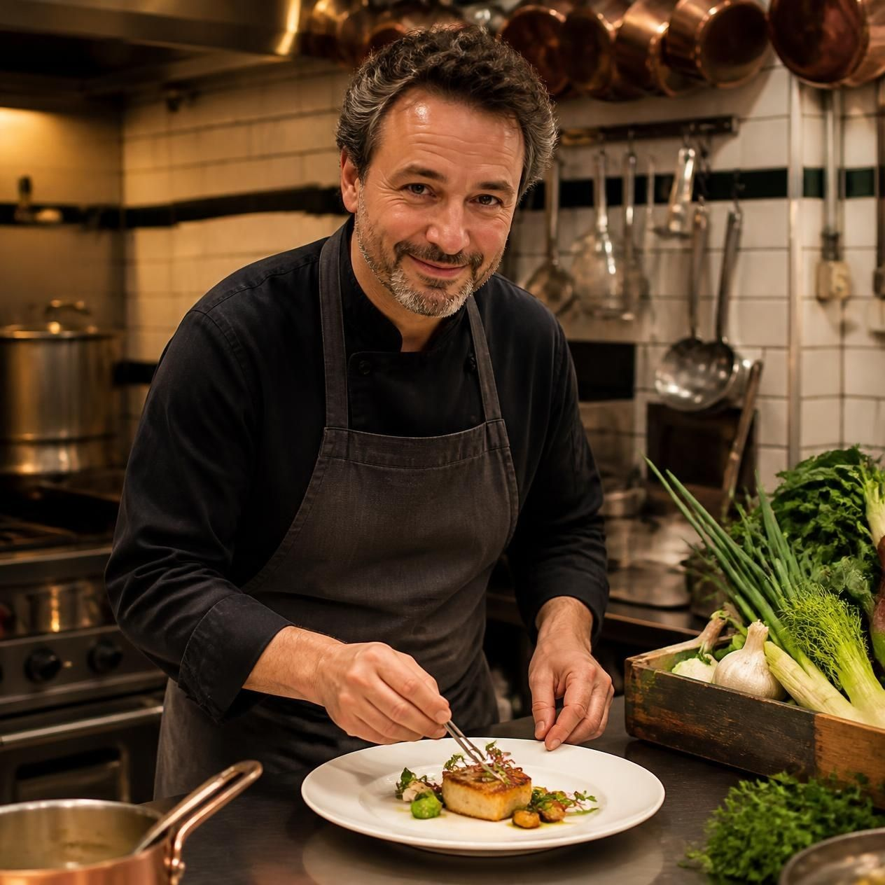
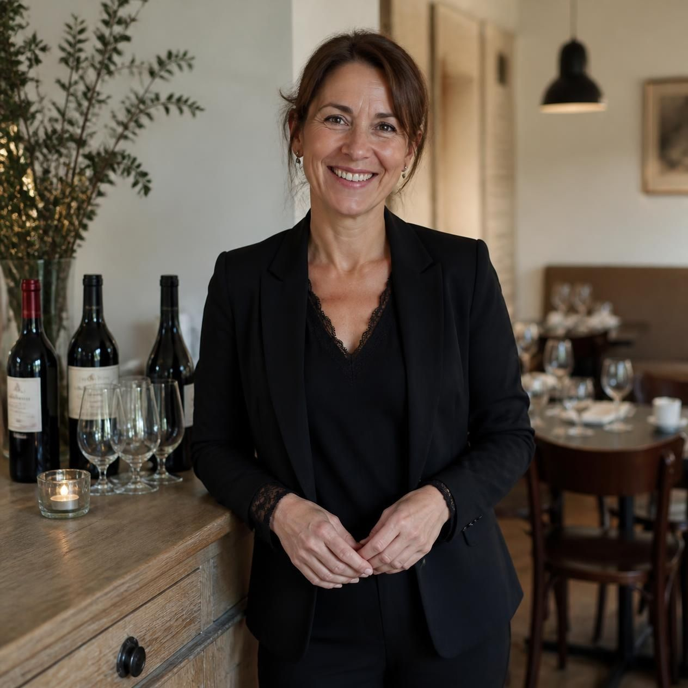

Une cuisine sincère, de saison & locale
Christophe en cuisine et Marie en salle vous accueillent dans un cadre chaleureux au cœur de Nantes pour célébrer le terroir ligérien.
Le goût authentique des produits de notre région
Niché au cœur du centre-ville de Nantes, Le Petit Nantais est né de l'envie simple de proposer une cuisine française traditionnelle, généreuse et profondément ancrée dans son territoire. Pas de carte interminable ni de produits venus de l'autre bout du monde : ici, tout est fait maison, chaque jour, avec passion.
100% Local & De Saison
Partenariats étroits avec les maraîchers et éleveurs locaux autour de Nantes.
Carte Courte
3 entrées, 3 plats, 3 desserts renouvelés au gré des arrivages et des saisons.

Christophe & Marie
Complices dans la vie comme derrière les fourneaux et en salle, ils vous reçoivent comme à la maison.

Christophe
Formé dans les traditions de la gastronomie française, Christophe sublime les produits bruts avec délicatesse. Amoureux des sauces mijotées et des cuissons justes, il réinvente les classiques selon l'humeur du marché de Talensac.

Marie
Souriante et attentionnée, Marie veille sur la salle avec une élégance naturelle. Elle saura vous conseiller le vin parfait pour accompagner votre plat, sélectionné auprès de vignerons indépendants de la vallée de la Loire.
La Carte du Moment
3 entrées, 3 plats, 3 desserts élaborés avec soin par le chef Christophe.
Les Entrées
Crème de champignons sauvages des forêts nantaises, mouillettes au levain.
Chèvre frais de la ferme locale, noisettes torréfiées et vinaigrette au miel de Loire.
Piments doux, pickles de légumes croquants du maraîcher et pain de campagne grillé.
Les Plats
Jus corsé au muscadet, écrasé de pommes de terre à l'huile d'olive et poêlée de champignons.
Légumes racines glacés au bouillon de légumes, émulsion d'herbes fraîches.
Laquée au jus de cuisson et cidre fermier, polenta crémeuse au vieux Cantal.
Les Desserts
Imbibé au rhum et citron vert, revisité avec finesse par Christophe.
Infusion de verveine du jardin, crumble croustillant aux amandes.
Fèves de cacao concassées et tuile dentelle croustillante.
Nos Producteurs Locaux
Nous travaillons main dans la main avec des artisans passionnés de la région nantaise.
Maraîchage Bio de la Sèvre
Vertou (44)
Légumes frais de saison cultivés dans le respect de la biodiversité.
Ferme de la Garenne
Blain (44)
Viandes fermières rigoureusement sélectionnées et produits laitiers artisanaux.
La Mareée Nantaise
Criée du Croisic & Loire
Poissons frais de ligne pêchés sur nos côtes bretonnes et vendéennes.
Vignoble du Landais
Val de Loire
Muscadet Sèvre-et-Maine et vins bio de vignerons indépendants.
Réserver votre table
Marie vous confirmera votre réservation par e-mail ou téléphone dans les plus brefs délais.
Venez nous rendre visite
Idéalement situé au cœur de Nantes, à deux pas de la place Graslin et du marché de Talensac.
Adresse
14 Rue Racine, 44000 Nantes
Horaires d'ouverture
Mardi au Samedi : 12h00 - 14h00 et 19h30 - 22h00
Fermé le dimanche et le lundi
Téléphone
02 40 00 00 00
Centre-ville de Nantes
À 5 min à pied du tramway (Lignes 1, 2 & 3 - Station Commerce ou Médiathèque).
Ouvrir dans Google Maps